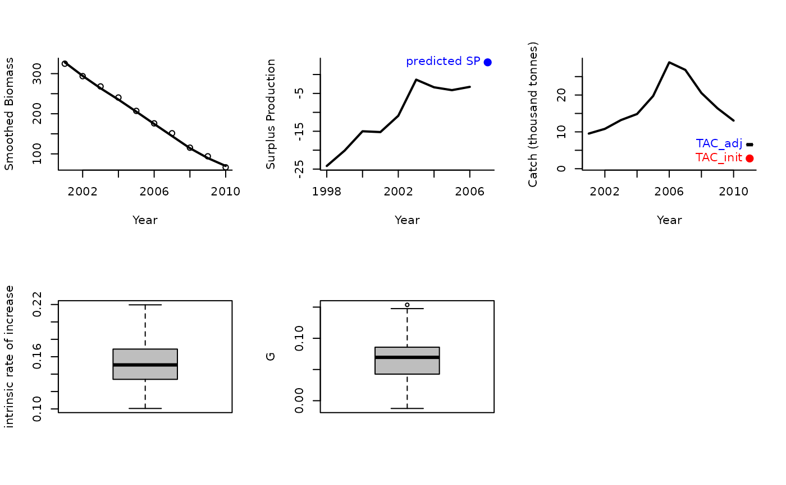
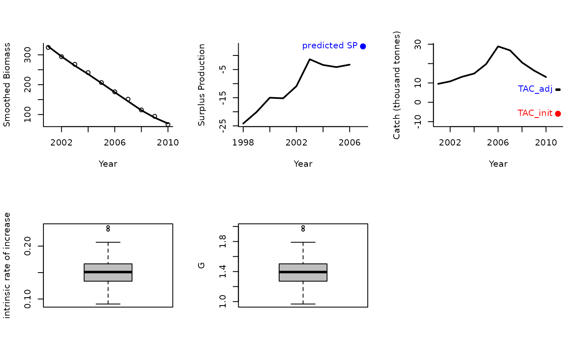

Rcontrol.RdAn MP proposed by Carl Walters that modifies the TAC according to trends in apparent surplus production that includes information from a demographically derived prior for intrinsic rate of increase
A position in the data object
A data object
The number of stochastic samples of the MP recommendation(s)
Logical. Show the plot?
The number of years for smoothing catch and biomass data
A gain parameters
Limits for the change in TAC among years
An object of class Rec-class with the TAC slot populated with a numeric vector of length reps
The TAC is calculated as:
$$\textrm{TAC} = \textrm{SP} (1-gG)$$
where \(g\) is a gain parameter, \(\textrm{SP}\) is estimated surplus production,
and \(G\) is:
For Rcontrol: \(G = r (1-2D)\) where \(r\) is the estimated intrinsic rate
of increase, and \(D\) is assumed depletion.
For Rcontrol2: \(G = r - 2bB_\textrm{hist}\) where \(B_\textrm{hist}\)
is the smoothed biomass overlast yrsmth years and:
$$b = \sum{\frac{\textrm{SP}}{B_\textrm{hist}} - r} \frac{\sum{B_\textrm{hist}}}{\sum{B_\textrm{hist}^2}} $$.
The TAC is subject to conditions limit the maximum change from the smoothed catch
over the last yrsmth years by the glim argument, e.g, default values of glim = c(0.5, 2)
means that maximum decrease in TAC is 50% of average catch and maximum increase
is 2 x average catch.
Rcontrol: Base version Rcontrol
Rcontrol2: This is different from
Rcontrol because it includes a quadratic approximation of recent trend in
surplus production given biomass
See Data-class for information on the Data object
Rcontrol: Abun, Cat, Dep, FMSY_M, Ind, L50, MaxAge, Mort, Year, steep, vbK, vbLinf, vbt0, wla, wlb
See Online Documentation for correctly rendered equations
Made-up for this package.
Rcontrol(1, Data=MSEtool::Atlantic_mackerel, plot=TRUE)

#> TAC (median)
#> 6.529254
Rcontrol2(1, Data=MSEtool::Atlantic_mackerel, plot=TRUE)

#> TAC (median)
#> 6.529254